Práctica 5: Series de Fourier en tiempo continuo
Integrantes del equipo: Ortega González Moisés Donaldo,Ortiz Colin Cesar Antonio
Contents
Introducción:
%Lathi explica en la sección 6.6 del libro que es posible calcular los %coeficientes Dn de la serie de Fourier aplicando la transformada de %Fourier para tiempo discreto, la cuál usa muestreos de una señal en cierto %periodo T0. Para un intervalo de muestreo T, por lo cuál obtendríamos N0 %muestras con N0=T0/T. %Lathi encuentra una relación entre los coeficientes Dn y las muestras N0, %al sustituirla N0 en la fórmula. %Lathi hace enfásis en la periodicidad de los coeficientes. %En el desarrollo del ejemplo, utiliza un N0 bastante grande, ya que %aumenta la precisión del cálculo con los armónicos. También dice que es %conveniente que la energía de la función sea 2, por lo tanto elige N0=256. %
Ejemplo 6.1
La funcion a la que se le pide calcular la serie de fourier es 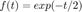, de donde el valor de a0=0.504, 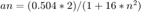 y 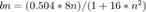 obtenidos previamente A continuacion se introducen los valores requeridos:
t0=0;% Valor inicial donde se calculó la serie de fourier tf=pi;% Valor final f=@(t) exp(-t/2); % funcion original a la que se le hará serie de fourier % Valores de los coeficientes a0=0.504; an=@(n) (0.504*2)/(1+(16*n*n)); bn=@(n) (0.504*8*n)/(1+(16*n*n)); % a y b se refieren al intevalo para realizar la grafica de la serie a=-7; b=10; armo=4; % numero de armonicos a realizar % Llamado a la funcion respectiva figure (1) % Para que no se traslapan los resultados de las graficas posteriores lo pondremos en distintos figure hFig = figure(1); sfc1(t0,tf,an,bn,a0,f,armo,a,b,hFig)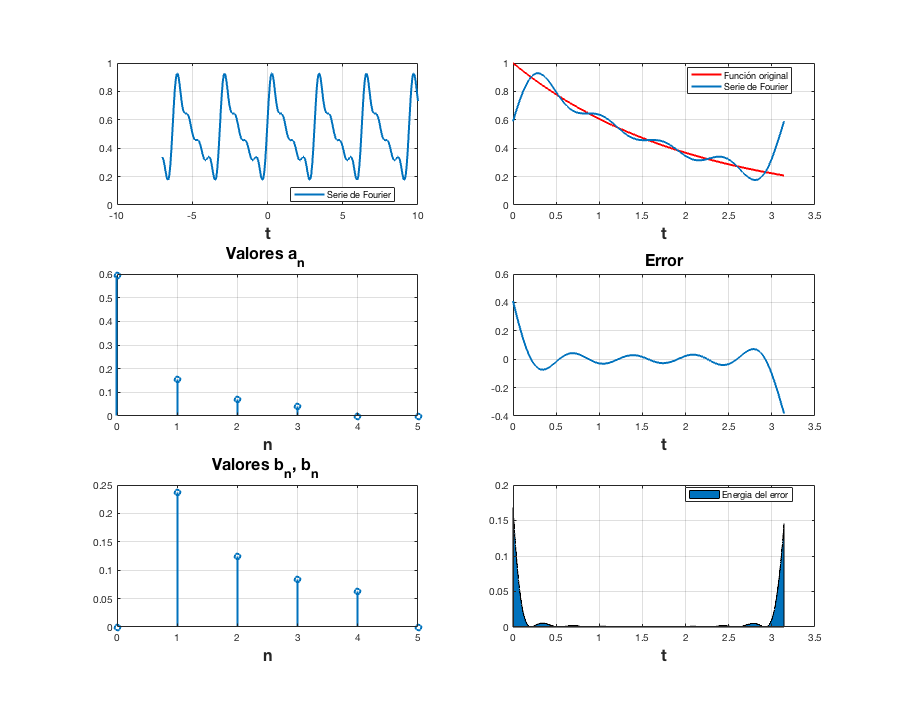
A continuacion todo lo anterior para 15 armonicos
t0=0; tf=pi; f=@(t) exp(-t/2); a0=0.504; an=@(n) (0.504*2)/(1+(16*n*n)); bn=@(n) (0.504*8*n)/(1+(16*n*n)); a=-7; b=10; ar=15; figure (2) hFig = figure(2); sfc1(t0,tf,an,bn,a0,f,ar,a,b,hFig)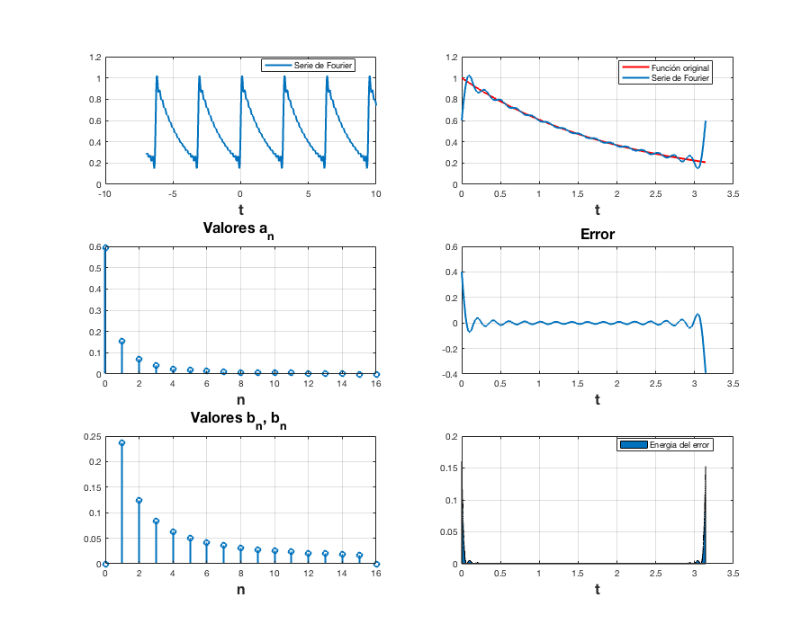
Ejemplo 6.2
Para este ejemplo nos dan la serie trigonometrica compacta donde 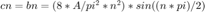 dado que a0=an=0; por tanto se tuvo que calcular dn ya se a partir de cn o realizando el calculo desde cero,quedando de la siguiente manea:
figure(11) s=imread('2.png'); imshow(s) A=3;% valor especificado f=@(t) (2*A*t.*(t>=-1/2 & t<=1/2))+(2*A*(1-t).*(t>1/2 & t<=3/2)); % función original dn=@(n) (0.5*(((3*(exp(-1.5*pi*n*j)-exp(.5*pi*n*j)))/(pi*n*j))+((6*(exp(-1.5*pi*n*j)-2*exp(-.5*pi*n*j)+exp(.5*pi*n*j)))/(-pi^2*n^2)))); a=-5;%a,b elegidos al azar para mostrar 5 repeticiones de la serie b=6; armo=5; t0=-1/2;%valor inicial para hacer la serie tf=3/2;%valor final para hacer la serie d0=0; figure (3) hFig = figure(3); sfc(t0,tf,dn,d0,f,armo,a,b,hFig)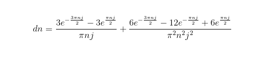 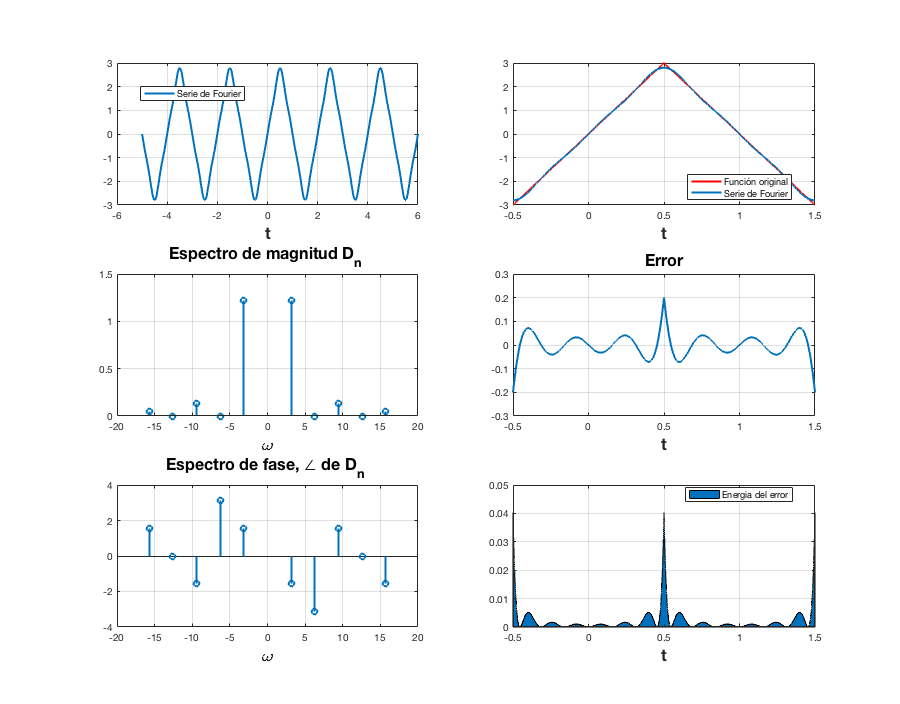
Todo lo anterior para 15 armonicos
A=3; f=@(t) (2*A*t.*(t>=-1/2 & t<=1/2))+(2*A*(1-t).*(t>1/2 & t<=3/2)); dn=@(n) (0.5*(((3*(exp(-1.5*pi*n*j)-exp(.5*pi*n*j)))/(pi*n*j))+((6*(exp(-1.5*pi*n*j)-2*exp(-.5*pi*n*j)+exp(.5*pi*n*j)))/(-pi^2*n^2)))); a=-5; b=6; armo=15; t0=-1/2; tf=3/2; d0=0; figure (4) hFig = figure(4); sfc(t0,tf,dn,d0,f,armo,a,b,hFig)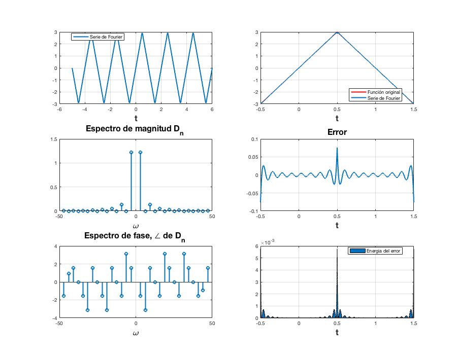
Ejemplo 6.4
En este ejemplo se pide calcualr a serie de fourier al un pulspo-cuadrado,nos brindan la serie trigonometrica de fourier por ende nosotros debimos calcular la dn que se mostrara en la imagen siguiente
figure(12) s=imread('4.png'); imshow(s) f=@(t) 1.*(t>=-pi/2 & t<=pi/2);% funcion original t0=-pi;%valor inicial para calcular la serie tf=pi;% valor final para calcular la serie a=-3*pi;%a y b elegidos al azar de forma que se muestren 5 repeticiones de la serie b=3*pi; armo=5;% para 5 armonicos do=.5;% obtenido al hacer la analogia de a0=c0=d0 para este caso en especifico dn=@(n) 1.*((exp(-.5*pi*n*j)-exp(.5*pi*n*j))/(-2*pi*n*j)); figure (5) hFig = figure(5); sfc(t0,tf,dn,do,f,armo,a,b,hFig)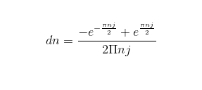 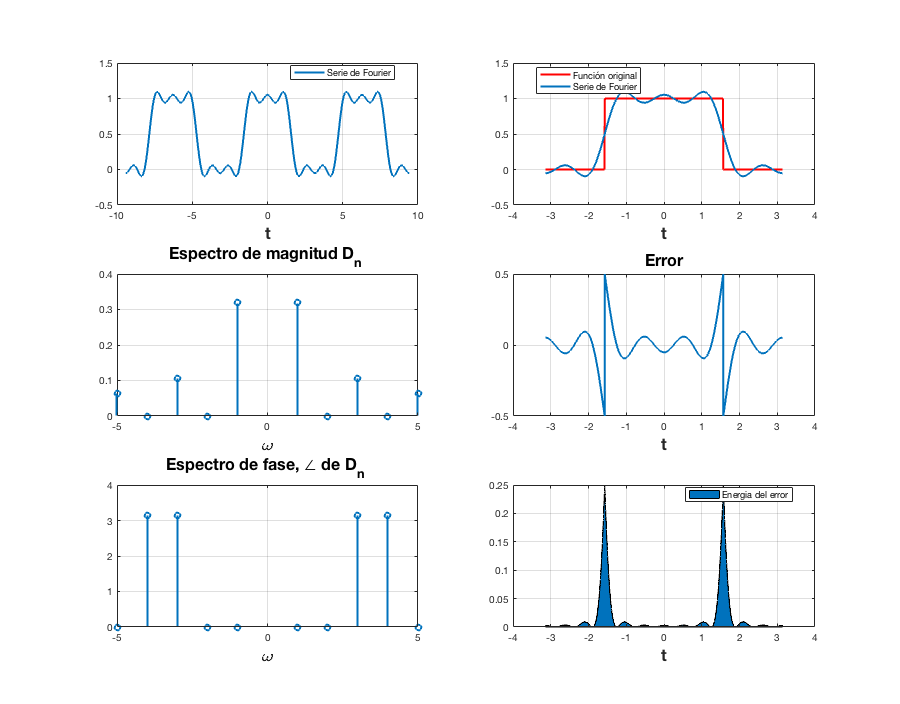
Todo lo anterior para 15 armonicos
f=@(t) 1.*(t>=-pi/2 & t<=pi/2);
t0=-pi;
tf=pi;
a=-3*pi;
b=3*pi;
armo=15;%15 armonicos
do=.5;
dn=@(n) ((exp(.5*pi*n*j)-exp(-.5*pi*n*j))/(2*pi*n*j));
figure (6)
hFig = figure(6);
sfc(t0,tf,dn,do,f,armo,a,b,hFig)
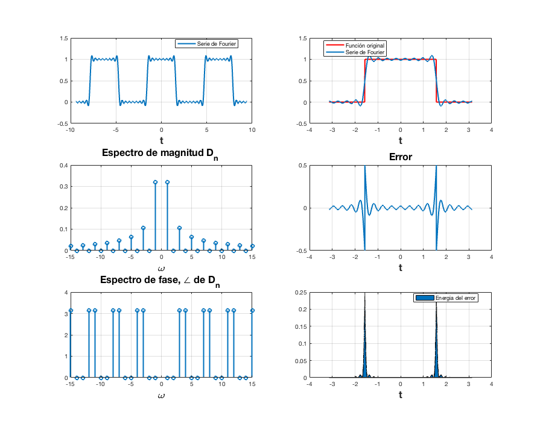 Ejemplo 6.5
La funcion original es , 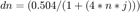 ,&d0=0.504& A continuacion el codigo para cuatro armonicos
d0=0.504; dn=@(n) 0.504/(1+4*n*j); t0=0; tf=pi; f=@(t) exp(-t/2); armo=4; a=-7; b=10; figure (7) hFig = figure(7); sfc(t0,tf,dn,d0,f,armo,a,b,hFig)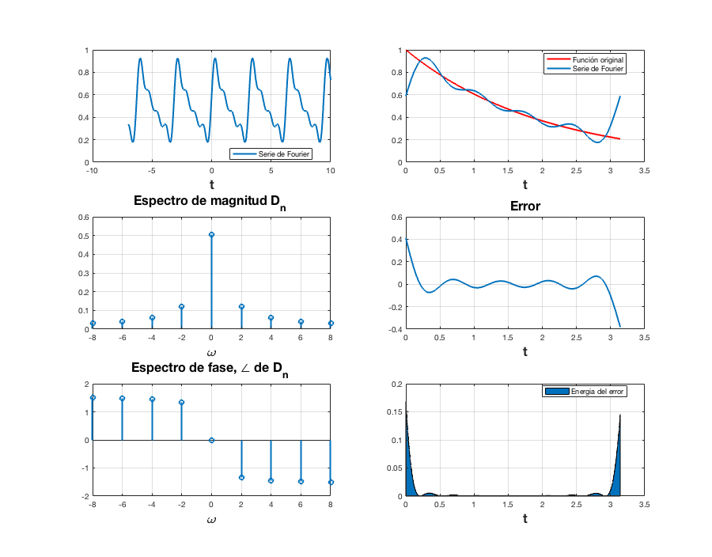
Todo lo anterior para 15 armonicos
d0=0.504; dn=@(n) 0.504/(1+4*n*j); t0=0; tf=pi; f=@(t) exp(-t/2); armo2=15; a=-7; b=10; figure (8) hFig = figure(8); sfc(t0,tf,dn,d0,f,armo2,a,b,hFig)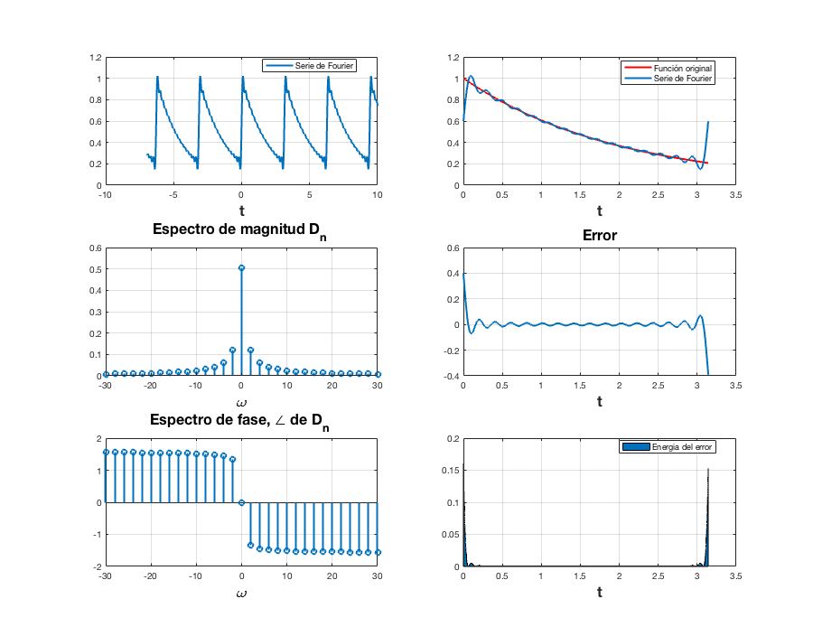
Ejemplo 6.7
Para este ejemplo se pide hacerle serie de fourier al impulso(delta de dirac) , por ende la funcion es la delta de dirac, con 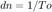 encontrado previamente
To=3;% valor pedido t0=-To/2; % valor inicial en calcular la serie tf=To/2; % valor final donde calcular la serie a=-7;% a y b de forma que se muestren 5 repeticiones de la serie(elegidos al azar) b=7; dn=1/To; armo=4; d0=1/3; figure (9) hFig = figure(9); sfc7(t0,tf,dn,d0,armo,a,b,hFig)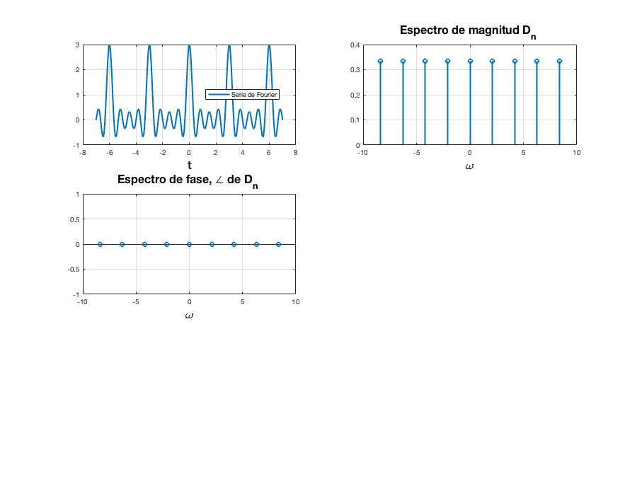
Todo lo anterior para 15 armonicos
To=3; t0=-To/2; tf=To/2; a=-7; b=7; dn=1/To; armo=15; d0=1/3; figure (10) hFig = figure(10); sfc7(t0,tf,dn,d0,armo,a,b,hFig)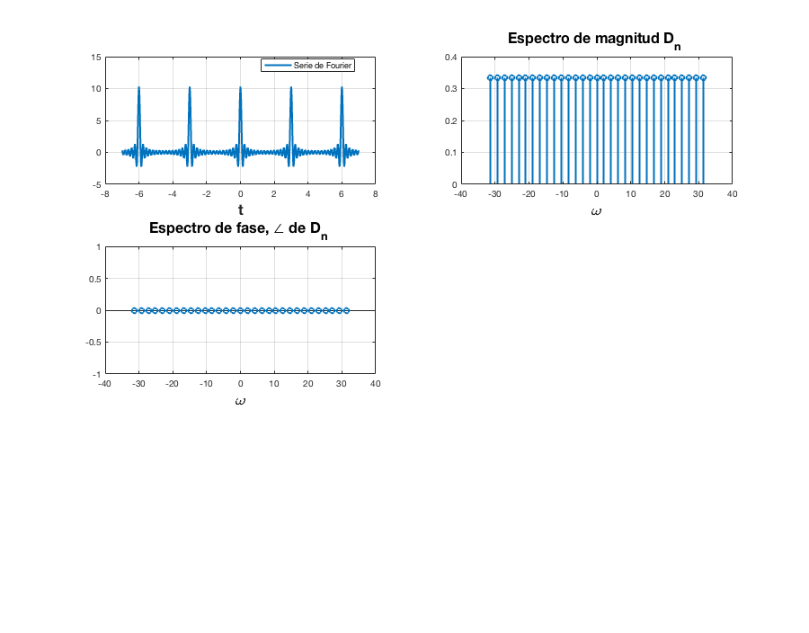
Código similar al COMPUTER EXAMPLE C6.2
A continuacion el codigo del lathi aplicado al ejemplo 6.2
A=3;
f=@(t) (2*A*t.*(t>=-1/2 & t<=1/2))+(2*A*(1-t).*(t>1/2 & t<=3/2));
t0=-1/2;%valor inicial para hacer la serie
tf=3/2;%valor final para hacer la serie
t=t0:0.0001:tf;
sumterms = zeros(16, length(t));
sumterms(1,:) = 1/2;
for n = 1:size(sumterms,1)-1
sumterms(n+1,:) = (2/(pi*n)*sin(pi*n/2))*cos(n*t);
end
x_N = cumsum (sumterms);
figure(14);
clf;
ind = 0;
for N = [0,1:2:size(sumterms, 1)-1]
ind = ind+1;
subplot (3,3,ind);
plot (t,x_N(N+1), 'k',t,f(t), 'k--')
axis ([-2*pi 2*pi -0.2 1.2]);
xlabel ('t');
ylabel (['x_{',num2str(N),'} (t)']);
endCódigo-algoritmo del trapecio y tabla comparativa
syms t n=(0:4); f=exp(-t/2); ti=0; tf=pi; t0=tf-ti; w0=2*pi/t0; f2(t)=f*exp(-n*w0*1i*t); Dn=(1/t0)*int(f2,t,ti,tf); exacto=double (Dn); %trapecio m=15000; n=(0:4); b=pi; a=0; t=-100:.1:100; w0=2*pi/(b-a); f=@(t) exp(-t/2)*exp(-n*w0*1i*t); h=(b-a)/m; aprox=f(a)+f(b); for i=1:m-1 x=a+i*h; aprox=aprox+2*f(x); end aprox=(h/2)*aprox; trapecio=aprox; %metodo lathi T_0 = pi; N_0 = 256; T = T_0/N_0; x = (0:T:T*(N_0-1))'; h = exp(-x/2); h(1) = (exp(-pi/2) + 1)/2; D_n = fft (h)/N_0; Lathi=[D_n(1) D_n(2) D_n(3) D_n(4) D_n(5)]; %errores error_trapecio=abs(exacto-trapecio); error_LATHI=abs(exacto-Lathi); %columna coeficiente= {'d0';'d1';'d2';'d3';'d4'}; exacto=vec2mat(exacto,1); trapecio=vec2mat(trapecio,1); error_trapecio=vec2mat(error_trapecio,1); Lathi=vec2mat(Lathi,1); error_LATHI=vec2mat(error_LATHI,1); T=table(exacto,trapecio,Lathi,error_trapecio,error_LATHI)
T =
5×5 table
exacto trapecio Lathi error_trapecio error_LATHI
___________________ __________________ ___________________ ______________ ___________
0.50428+0i 1.5842+0i 0.50428+0i 1.08 1.5822e-06
0.029664-0.11865i 0.093191-0.37276i 0.029665-0.11865i 0.26193 6.5235e-06
0.0077581-0.062065i 0.024373-0.19498i 0.0077597-0.062053i 0.13395 1.2756e-05
0.0034778-0.041733i 0.010926-0.13111i 0.0034794-0.041714i 0.089686 1.9053e-05
0.0019622-0.031395i 0.0061644-0.09863i 0.0019638-0.03137i 0.067366 2.5368e-05
%Referencias %Lathi, B. P., (2005). Linear Systems and Signals. EUA: Oxford university Press